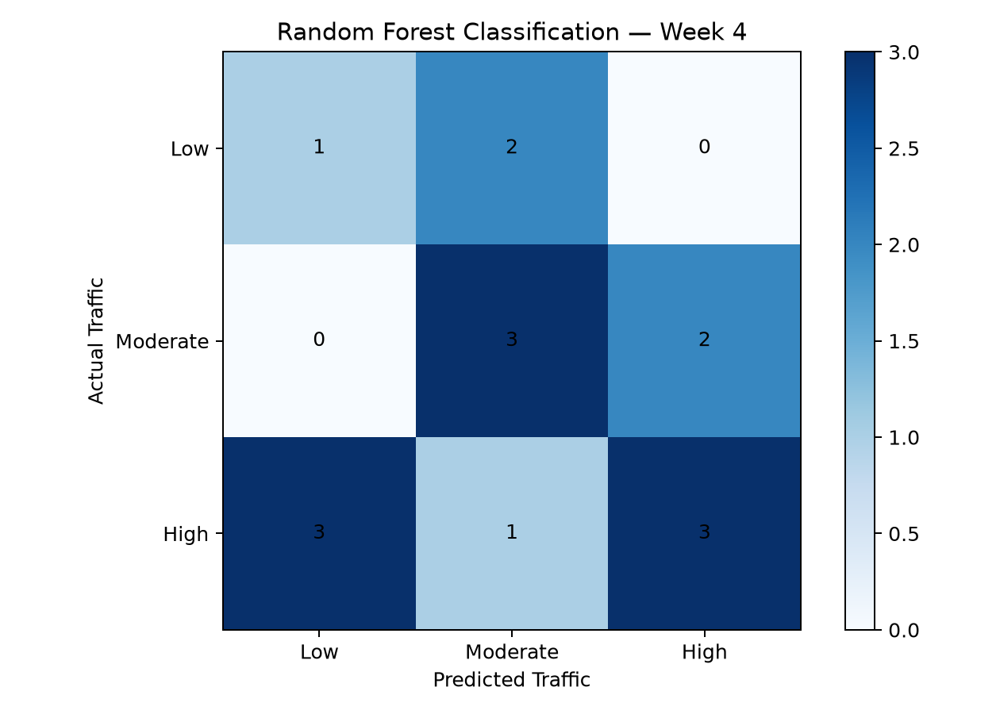
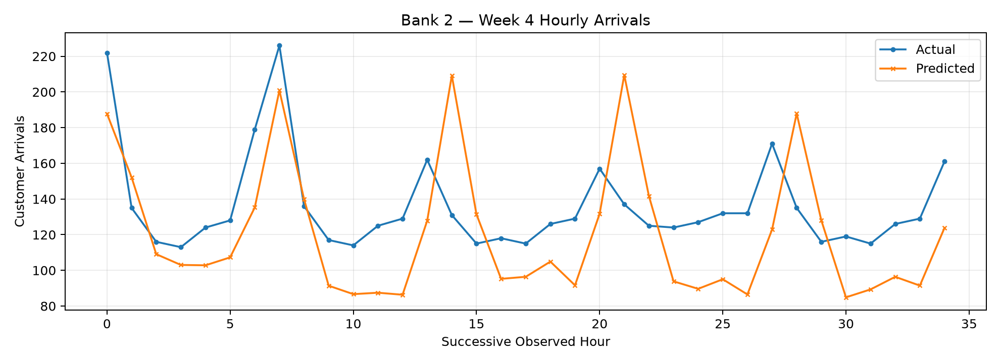
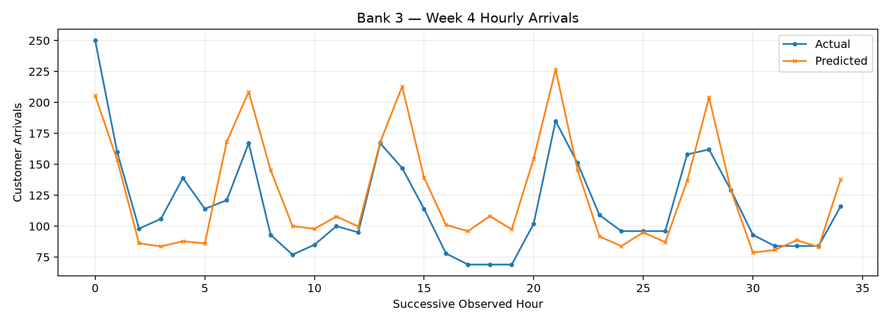

Archived Nigerian Bank ML Evaluation
Experimental Random Forest Classification and Regression, using genuine Nigerian bank-arrival observations.
Different experiment, not the Chapter 4 model. The 46.67% accuracy below comes from 15 held-out Nigerian bank-days. The thesis primary date-only classifier reports 24.24% (16/66) on a separate simulated 2026 test set. Neither figure represents validated live Philippine branch forecasting.
Experimental research only. The dataset covers four observation weeks, not the required ten years. Predictions are not validated for Philippine bank branches or specific future calendar dates.
Experimental research only. The dataset covers four observation weeks, not the required ten years. Predictions are not validated for Philippine bank branches or specific future calendar dates.
Dataset and Testing
Observed bank-days60
Hourly records419
Training weeks1–3
Test week4
Classification: 45 training days and 15 testing days. Regression: 314 training hours and 105 testing hours. Observed hours: 08:00–14:59.
Random Forest Classification
Test accuracy46.67%
Majority baseline33.33%
Confusion Matrix
| Actual / Predicted | Low | Moderate | High |
|---|---|---|---|
| Low | 1 | 2 | 0 |
| Moderate | 0 | 3 | 2 |
| High | 3 | 1 | 3 |
Random Forest Regression
Median absolute residual25.22
Baseline median absolute residual26.00
Mean residual6.01
Residuals are actual customer arrivals minus predicted arrivals. Values are measured in customers per observed hour.
Classification Confusion Matrix

Bank 1: Actual vs Predicted

Bank 2: Actual vs Predicted

Bank 3: Actual vs Predicted

Regression Residual Distribution

Research Evidence
Classification holdout CSV | Regression holdout CSV | Evaluation metrics JSON
The models use bank identifiers and observation-day positions; the regression model also uses the observed hour. Original observation dates were not verified.
This evaluation does not replace the existing experimental traffic scenarios.